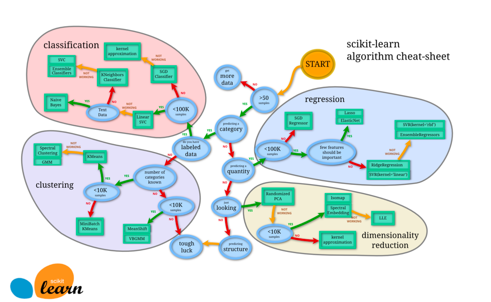
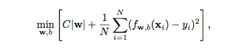
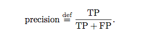
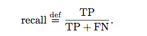
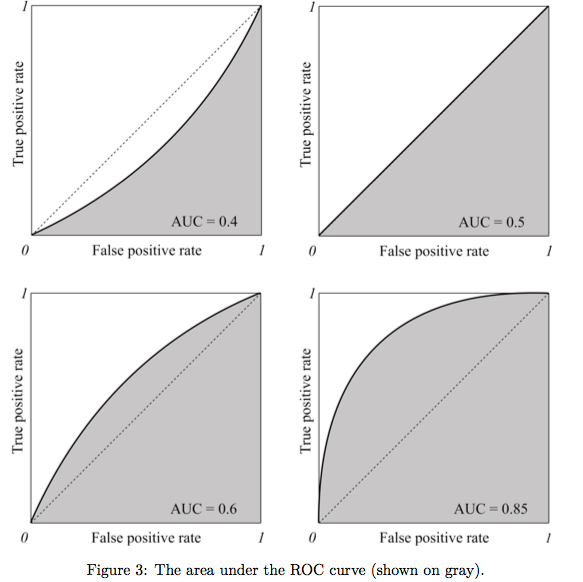

Machine Learning
Basic Practice
Feature Engineering
:
Transform raw data into the dataset
Categorical data => numerical:
-
Cannot simply use 1, 2, 3 because it implies an order.
Binning
: Transform numerical data into categorical ones
Normalization
:
-
Standardization/z-score normalization
:
-
Normalize the distribution to have
μ = 0
and
σ = 1
-
Unsupervised learning
-
Bell-shaped feature
-
When have outliers
-
Otherwise normalization
Data Imputation
- Deal with missing feature
-
Replace the missing value of the feature with the average value of this feature in the dataset.
-
Set the missing value to be value outside of the value range of the feature, and let the computer to learn how to deal with outliers.
-
Use missing values as targets
Learning Algorithm Selection
-
In-memory vs. out-of-memory
-
Can the data be fully loaded into the RAM?
-
If not choose incremental learning algorithms
-
Categorical vs. numerical
-
Is linear separable?
-
Yes - SVM w/ linear kernel, logistic regression
-
No - NNWs etc.
-
Prediction speed:
-
KNN is slow, so does deep/recurrent networks.
Scikit-Learn Algorithm

Regularization: Deal with overfitting

-
“Determines the tradeoff btw increasing the margin and ensuring each x lies on the right side.”
-
Usually chosen experimentally
-
As C gets greater, the cost for misclassification (the second term of the function) becomes negligible. => SVM will try to find the highest margin by ignoring misclassification.
Model Performance Assessment
-
For REGRESSION:
-
For CLASSIFICATION:
-
Accuracy / Cost-sensitive accuracy:
-
Precision:

-
“The proportion of relevant documents in all returned documents”.
-
Useful when solving a spam problem. People have more tolerance of not spamming junk mails over spamming important emails.
-
Recall:

-
“The ratio of the relevant documents returned o the total number of the relevant documents that could have been returned.”
-
Confusion Matrix:
-
Useful when accessing multi-class classification.
-
In its (i,j) cell, it shows the number of instances i that were predicted to be in class j.
-
Area under the ROC Curve (AUC)
~

-
1. Discretize the range of the confidence score.
-
If this range for a model is [0, 1], then you can discretize it like this: [0, 0.1, 0.2, 0.3, 0.4, 0.5, 0.6, 0.7, 0.8, 0.9, 1].
2. Use each discrete value as the prediction threshold, predict the labels of examples in your dataset using the model and this threshold.
-
Can only be used to assess classifiers w/ return confidence score/probability of prediction
-
E.g. Logistic Regression, NNWs, Decision Tree
-
The higher the AUC the better the classifier
Hyperparameter Tuning
How to select good hyperparameters like C for SVM?
-
Grid Search
-
Use different non-random value for different models and evaluate them to find the best one.
2. R
andom search
and
Bayesian hyperparameter optimization.
3.
Cross-Validation
-
Build model iteratively by dividing the dataset into subsets (called folds) and average them to get the final result.